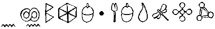

EN FIN, KNIGHTSBRIDGE, LONDON
ARTEMİS Fowl neredeyse durumdan memnundu. Babası her an Helsinki Üniversite Hastanesinden çıkabilirdi. Artemis, Londra’nın deniz ürünü lokantalarından biri olan En Fin’deki leziz öğle yemeğini sabırsızlıkla bekliyordu ve iş bağlantısı her an gelebilirdi. Her şey plana göre işliyordu.
Koruması Kâhya o kadar rahat değildi. Ama zaten o asla hiçbir zaman gerçekten rahat olmazdı; insan öyle gardım düşürerek kolay kolay dünyanın en ölümcül adamı olamazdı. Dev Avrasyalı Knightsbridge lokantasının masaları arasında hızla dolaşıp her zamanki güvenlik malzemelerini yerleştirdi ve çıkış yerlerini temizledi.
“Kulaklıklarım takıyor musun?” diye işverenine sordu.
Artemis derince bir iç çekti. “Evet, Kâhya. Ama burada pek tehlikede olduğumuzu sanmıyorum. Tanrı aşkına, burası gün ışığında yasal bir iş toplantısı yapmak için mükemmel? bir yer.”
Kulaklıklar aslında ses filtresi süngerleriydi, LEP miğferlerinden alınmışlardı. Bir yıl önce, Artemis’in dalaverelerinden biri onu bir peri vurucu timiyle karşı karşıya getirdiğinde, Kâhya peri teknolojisinden bir defineyle beraber miğferleri ele geçirmişti. Süngerler LEP laboratuvarlarında yetiştirilmişlerdi ve desibel seviyesi tehlikeliye ulaştığında minnacık gözenekli zarları otomatik olarak kapanıyordu.
“Belki öyledir, Artemis ama tetikçilerin özelliği insanları habersiz yakalamayı sevmelerindedir. ”
“Olabilir,” diye karşılık verdi Artemis, menünün antre bölümünü dikkatle okurken. “Ama kim bizi öldürmek isteyebilir ki?”
Kâhya yemek yiyenler içindeki bir kadına, ya bir şey planlıyorsa diye ters bir şekilde gözlerini dikti. Kadın en az seksen yaşındaydı.
“Belki bizim peşimizde olmayabilirler. Jon Spiro’nun güçlü bir adam olduğunu unutma. Birçok şirketi işsiz bıraktı. Yaylım ateş arasında kalabiliriz.”
Artemis başıyla onayladı. Her zamanki gibi Kâhya haklıydı. Onların hâlâ hayatta olma nedeniydi buydu zaten. Buluşacağı Amerikalı Jon Spiro tetikçilerin mermilerini çekecek türden bir adamdı. Gölgeli bir geçmişi vardı ve çetelerle bağlantısı olduğu iddia edilen, başarılı bir BT milyarderiydi. Söylentilere göre şirketi Fission Cips çalınmış araştırmalar sayesinde zirveye ulaşmıştı. Tabii ki bugüne kadar hiçbir şey ispatlanmamıştı; Chicago bölge savcısının birçok kez uğraşmasına rağmen.
Bir garson kız, yüzünde muhteşem bir gülümsemeyle onlara yaklaştı.
“Selam, genç adam. Çocuk menüsünü germek ister misin?”
Artemis’in alnında bir damar atmaya başladı.
“Hayır, “Hayır, mademoiselle, çocuk menüsünü görmek istemiyorum. Çocuk menüsünün üzerindeki yemeklerden daha leziz olduğuna hiç şüphem yok. A la carte rica edeceğim. Yoksa ergenlik yaşına girmemişlere balık servisi yapmıyor musunuz?”
Garsonun gülümserken gözüken azı dişlerinin bir kısmı kayboldu. Artemis’in kelime hâzinesi çoğu insan üzerinde böyle etkiler uyandırırdı.
Kâhya gözlerini yukarı dikti. Artemis kimin onu öldürmek istediğini merak etti. Başlangıç olarak, Avrupa’daki terzi ve garsonların çoğu bunu isterdi.
“Emredersiniz, efendim,” diye kekeledi şansız garson kız. “Nasıl isterseniz.”
“Sebze ve taze patates garnitürlü, karışık kılıç ve köpekbalığı tavası istiyorum.”
“İçmek için?”
“Kaynak suyu. Eğer varsa, İrlanda kaynak suyu olsun. Ve lütfen buz olmasın çünkü buzlarınız hiç şüphesiz musluk suyundan yapılıyordur ve kaynak suyunun özelliğini yok edecektir.”
Garson kız masa altıdaki soluk tenli ufaklıktan kaçıp rahatlamak için aceleyle mutfağa gitti. Bir zamanlar bir vampir filmi görmüştü. Yaşayan ölü yaratıklarda aynı hipnotize eden bakışları vardı. Belki çocuğun yetişkin gibi konuşmasının nedeni aslında beş yüz yaşında olmasıydı.
Artemis neden olduğu dehşetin farkında olmadan yemeğinin beklentisiyle gülümsedi.
“Okul danslarında büyük başarılara imza atacaksın,” diye yorumda bulundu Kâhya.
“Anlamadım?”
“Zavallı kız neredeyse ağlıyordu. Arada bir nazik olmanın bir zararı yok.”
Artemis buna şaşırmıştı. Kâhya nadiren kişisel konularda fikrini söylerdi.
“Okul danslarına gideceğimi sanmıyorum, Kâhya.” “Dans önemli değil. Önemli olan iletişim.”
“İletişim mi?” diye alay etti Artemis Fowl. “Benim kelime hâzineme sahip, yaşayan bir genç bulacağımı sanmıyorum.”
Kâhya konuşmak ve iletişim arasındaki farkı belirtmek üzereydi ki lokantanın kapısı açıldı. Ufak tefek, bronz tenli bir adam, yanındaki tam manasıyla dev bir adamla beraber içeri girdi. Bunlar Jon Spiro ve korumasıydı.
Kâhya patronunun kulağına fısıldamak için eğildi. “Dikkatli ol, Artemis. İri olanın ününü biliyorum.” Spiro, kolları iki yana açık, masaların arasından dolaşarak yaklaşıyordu. Bir cirit gibi ince ve Artemis’den birazcık uzun, orta yaşlı bir Amerikalıydı. Seksenlerde işi taşımacılıktı, doksanlarda hisse senetlerinden büyük vurgunlar yapmıştı. Artık, iletişimle ilgileniyordu. Her zamanki beyaz keten takımını giyiyordu. Bileklerinde ve parmaklarında Taç Mahal’i süsleyecek kadar mücevherat vardı.
Artemis iş arkadaşını karşılamak için ayağa kalktı. “Bay Spiro, hoş geldiniz.”
“Selam, küçük Artemis Fowl. Nasılsın bakayım?”
Artemis adamın elini sıktı. Spiro’nun takıları bir çıngıraklı yılanın kuyruğu gibi tıngırdadı.
“İyiyim. Geldiğinize sevindim.”
Spiro bir iskemle çekti. “Artemis Fowl’dan bir teklif gelirse burada olmak için kırık camların üzerinden yürürüm.”
Korumalar birbirlerini tartarak süzdüler. Cüsselerini saymazsak, ikisi tamamen zıt kutuplardı. Kâhya hafife alınacak bir verimlilik örneğiydi. Siyah takım elbise, kazınmış bir kafa ve neredeyse iki onluk boyuyla olabildiği kadar göze çarpmamaya çalışan bir tipti. Yeni gelenin beyaza yakın sarı saçları, kesik bir tişörtü ve iki kulağında da gümüş korsan küpeleri vardı. Bu, unutulacak ya da umursanmayacak bir adam değildi.
“Pervasız Arno,” dedi Kâhya. “Senden bahsedildiğini duydum.”
Pervasız, Jon Spiro’nun omzunun yanındaki yerini aldı.
“Kâhya. Kâhyalardan biri,” dedi bir Yeni Zellanda aksanıyla. “Sizin en iyiler olduğunuzu duydum. Bu duyduğum bir şey. Umarım bunun doğru olup olmadığını öğrenmek zorunda kalmayız.”
Spiro güldü. Ses bir kutu çekirgeden geliyormuş gibiydi.
“Arno, lütfen. Burada arkadaşlar arasındayız. Bugün tehditlerle uğraşacak değiliz.”
Kâhya bundan emin değildi. Kafatasının merkezindeki asker hisleri bir yaban arısı kovanı gibi vızıldıyordu.
“Peki, dostum. İşe dönelim,” dedi Spiro, birbirine bitişik siyah gözlerini Artemis’e dikerek. “Atlantik boyunca ağzımın suyu aktı durdu. Bana uygun neyin var?” Artemis kaşlarını çattı. Öğle yemeklerini yiyene kadar işin bekleyeceğini umuyordu.
“Menüyü görmek ister misin?”
“Hayır. Artık fazla yemiyorum. Çoğunlukla haplar ve sıvılar. Bağırsak sorunları.”
“Peki öyleyse,” dedi Artemis, alüminyum bir evrak çantasını masaya koyarak. “O zaman işe başlayalım.” Çantanın kilidini açıp mavi bir köpüğün içinde duran, mini bir diskçalar boyundaki, kırmızı bir küpü ortaya çıkardı.
Spiro gözlüğünü kravatının ucuyla temizledi. “Gördüğüm bu şey ne, ufaklık?”
Artemis parıldayan kutuyu masanın üzerine koydu. “Gelecek, Bay Spiro. Planlananın çok ilerisinde.”
Jon Spiro yakından bakmak için eğildi.
“Bana göre bir kâğıt ağılığına benziyor.”
Pervasız Arno kıs kıs güldü, gözleri Kâhya’yla alay ediyordu.
“O zaman bir gösteri yapalım,” dedi Artemis, metal kutuyu alarak. Bir düğmeye bastı ve zımbırtı hırıldayarak çalıştı. Bölümler geriye kayarak hoparlörleri ve bir ekranı ortaya çıkardı.
“Hoş,” diye mırıldandı Spiro. “Bir mikro TV için üç bin mil mi, geldim?”
Artemis başıyla onayladı. “Bir mikro TV. Ama aynı zamanda sesle kontrol edilen bir bilgisayar, bir cep telefonu, bir tanıma aleti. Bu küçük kutu elektrikli ya da organik her tür platformdaki bütün bilgileri kesinlikle okuyabilir. Video, lazer disk, DVD çalar, internete girebilir, e-posta alır, herhangi bir bilgisayarı zorla ya da gizlice girebilir. Hatta göğsünü tarayıp kalbinin ne kadar hızlı attığını gösterebilir. Pili en az iki yıl dayanır ve tabii ki kesinlikle kablosuzdur.”
Artemis söyledikleri yerine otursun diye ara verdi.
Spiro’nun gözlüklerinin arkasındaki gözleri faltaşı gibi kocaman olmuştu.
“Yani, bu kutunun...”
“Bütün diğer teknolojilerin modasını geçireceğini söylüyorum. Senin bilgisayar planların bir değeri kalmayacak.”
Amerikalı birkaç derin nefes aldı.
“Ama nasıl... nasıl?”
Artemis kutuyu çevirdi. Kızıl ötesi bir algılayıcı arkasında yavaş yavaş yanıp sönüyordu.
“İşin sırrı burada. Tamamı bir omni-algılayıcı. İstediğin her şeyi okuyabilir. Ve içindeki kaynak, programlanırsa seçtiğin herhangi bir uyduya bağlanabilir.”
Spiro parmağını salladı. “Ama yasal, değil mi?”
“Evet, evet,” dedi gülümseyerek Artemis. “Böyle bir şeyin aleyhinde hiçbir kanun yok. En azından piyasaya çıktıktan iki yıl sonrasına kadar olmayacak. Napster’ı kapatmalarının ne kadar sürdüğünü biliyorsun.”
Amerikalı yüzü ellerinin arasına aldı. Bu çok fazlaydı.
“Anlamıyorum. Bu, şu anda elimizde olanların hepsinden yıllar, hayır, onlarca yıl ileri. Sen on üç yaşındaki bir çocuktan başka bir şey değilsin. Bunu nasıl yaptın?”
Artemis bunu bir an düşündü. Ne diyecekti? On altı ay önce Kâhya’nın LEP Düzetme Timini ele geçirip onların peri teknolojisine el koyduğunu mu söyleyecekti? Sonra, o, Artemis’in parçalarını alıp bu mükemmel kutuyu imal ettiğini mi? Hiç de olacak bir şey değildi bu.
“Benim çok zeki bir çocuk olduğumu kabul edelim, Bay Spiro.”
Spiro’nun gözleri kısıldı. “Belki düşünmemizi istediğin kadar zeki değilsindir. Bir gösteri istiyorum.”
“Tabii ki,” diye başıyla onayladı Artemis. “Cep telefonunuzu var mı?”
“Doğal olarak.” Spiro, Fission Cips’in en son modeli olan cep telefonunu masanın üzerine koydu.
“Anladığım kadarıyla güvenlikli?”
Spiro kendini beğenmiş bir tavır içinde başıyla onayladı. “Beş yüz bitlik şifresi var. Türünü en iyisi. Bir kod olmadan Fission 400’e giremezsin.”
“Göreceğiz.”
Artemis algılayıcıyı telefona doğrulttu. Ekranda hemen cep telefonunun çalışma görüntüsü belirdi.
“İndirme?” diye sordu hoparlörden metalik bir ses.
“Onaylandı.”
Bir saniye bile geçmeden iş bitmişti. “İndirme tamamlandı,” dedi kutu, belli belirsiz bir kendini beğenmiş havada.
Spiro şaşkınlıktan dona kalmıştı. “Buna inanmıyorum. Bu sistem yirmi milyon dolar ediyor.”
“Beş para etmez,” dedi Artemis, ona ekranı göstererek. “Evi aramak ister misin? Ya da hisselerinin bazılarını satmak? Banka hesaplarının numaralarını sim kartında tutmaman lazım.”
Amerikalı birkaç saniye düşündü.
“Bu bir üçkâğıt,” dedi sonunda. “Telefonumla ilgili bilgileri biliyor olmalısın. Bir şekilde, nasıl olduğunu bana sorma ama daha önceden ona girdin.”
“Bu mantıklı,” diye onayladı Artemis. “Ben de olacağından şüphelenmiş tim. Nasıl bir test istediğini sen söyle.”
Spiro gözlerini lokantada gezdirdi, parmakları masada trampet çalıyordu.
“Orada,” dedi barın üstündeki video rafını göstererek. “Onun kasetlerinden birini çal.”
“O kadar mı?”
“Başlangıç olarak yeterli.”
Pervasız Arno kasetleri karıştırıp sonunda etiketsiz bir tanesini seçip büyük bir gösteri yaptı. Kaseti masaya vurup gümüş çatal bıçak takımını havaya zıplattı.
Artemis gözlerini bu da ne dercesine yukarı dikme arzusunu bastırdı ve kırmızı kutuyu kasetin yüzeyine yerleştirdi.
Kasetin iç parçalarının görüntüsü minik plazma ekranda belirdi.
“İndirme?” diye sordu kutu.
Artemis başıyla onayladı. “İndir, düzenle ve oynat.” Tekrar, işlem bir saniyede tamamlandı. Bir İngiliz dizisinin eski bölümlerinden bir oynamaya başladı.
“DVD kalitesinde,” diye açıkladı Artemis. “Giriş ne olursa olsun, C Küp düzenleyecektir.”
" “Ne?”
“C Küp,” diye tekrar etti Artemis. “Küçük kutuya verdiğim ad. Biraz aleni olduğunu, kabul ediyorum. Küp her şeyi görür*.”
*İngilizce’de “c” harfi tek başına okunduğunda görmek manasına gelen kelimeye denk gelir.
Spiro video kaseti kaptı. “Kontrol et,” diye emredip kaseti Pervasız Arno’ya attı. Sarı saçlı koruma, kaseti yerine sokarak barın televizyonunu çalıştırdı. Ekranda titreyerek Coronation Street belirdi. Aynı diziydi. Ama görüntü aynı kaliteye yaklaşamıyordu bile.
“İkna oldun mu?” diye sordu Artemis.
Amerikalı bileziklerinden birini kurcaladı.
“Neredeyse. Son bir test daha. İçimde hükümetin beni izlediği gibi bir his var. Bunu kontrol edebilir misin?” Artemis bir an için bunu düşündü, sonra tekrar kırmızı kutuya seslendi.
“Küp, bu binaya odaklanan herhangi bir izleme ışını algılıyor musun?”
Makine bir saniye için olduğu yerde döndü.
“En güçlü iyon ışını sekiz kilometre batıda, ST1132P kod numaralı ABD uydusundan çıkıyor. CIA’e kayıtlı.
Yaklaşık geliş süresi sekiz dakika. Bağlantılı olan birkaç LEP sondası...
Artemis Küp devam etmeden önce sessiz düğmesine bastı. Bilgisayarın peri parçalarının LEP teknolojisini de bulacağı ortadaydı. Bunu düzeltmesi gerekiyordu. Yanlış ellerdeki bu bilgi peri güvenliğini yok edebilirdi.
“Sorun ne, ufaklık? Kutu hâlâ konuşuyordu. LEP de kim?”
Artemis omuz silkti. “Siz Amerikalıların dediği gibi para yok, oyun yok. Bir örnek yeter. CIA tamam.”
“CIA,” dedi Spiro. “Askeri sırları sattığımdan şüpheleniyorlar. Sadece beni takip etmek için kuşlarından birini yörüngeden çekmişler.”
“Ya da beni,” diye belirtti Artemis.
“Belki de seni,” diye ona katıldı Spiro. “Her an gözüme daha korkunç görünüyorsun.”
Pervasız Arno alay edercesine kıkırdadı.
Kâhya bunu umursamadı. İçlerinden birinin profesyonel olması gerekiyordu.
Spiro eklemlerini kıtırdattı. Bu, Artemis’in nefret ettiği bir huydu.
“Sekiz dakikamız var, bu yüzden konuya dönelim, ufaklık. Kutu kaç para?”
Küpün biraz önce neredeyse açıkladığı LEP bilgisine takılan Artemis dikkat etmiyordu. Dikkatsiz bir anında, neredeyse yeraltında yaşayan arkadaşlarını tam onları sömürebilecek türden bir adam karşısında açığa vuracaktı.
“Özür dilerim, ne demiştin?”
“Kutu kaç para?”
“Önce, o bir Küp,” diye düzeltti Artemis. “Ye ikinci olarak satılık değil.”
Jon Spiro derin, ürpertili bir nefes aldı. “Satılık değil mi? Beni Atlantik’in öte yanından satmayacağın bir şeyi göstermek için mi getirdin? Burada neler oluyor?”
Kâhya kemerindeki silahının kabzasını sıkıca tuttu. Pervasız Arno’nun eli arkasında kayboldu. Gerginlik aniden hızla arttı.
Kâhya iki elinin parmaklarını birleştirdi. “Bay Spiro. Jon. Ben tam bir salak değilim. Küpün değerini biliyorum. Özellikle bu aleti almak için dünyada yeterli para yok. Bana verebileceğiniz şey bir hafta içinde bin misli değerde olacaktır.”
“O zaman nasıl anlaşacağız, Fowl?” diye sordu Spiro, sıktığı dişlerinin arasından. “Ne teklif ediyorsun?” " “Size on iki ay veriyorum. Doğru fiyatı verirseniz bir seneliğine Küpü pazara çıkarmayacağım.”
Jon Spiro kimlik bileziğiyle oynadı. Bu ona bir doğum günü hediyesiydi.
“Bu teknolojiyi bir yıl saklı mı tutacaksın?”
“Doğru. Bu da size çökmeden önce hisselerinizi satabilmeniz ve karla Fowl Endüstrisi alabilmeniz için gereğinden çok zaman sağlayacaktır.”
“Fowl Endüstrisi diye bir şey yok.”
Artemis sırıttı. “Olacak.”
Kâhya patronunun omzunu sıktı. Jon Spiro gibi bir adamı kızdırmak iyi bir fikir değildi.
Ama Spiro alayı fark etmemişti bile. Kafası hesap yapmakla meşguldü, bilezikleriyle tespih gibi oynuyordu.
“Kaç para?” diye sordu en sonunda.
“Altın. Bir metre küp altın,” diye cevapladı Fowl servetinin varisi.
“Bu çok fazla altın eder.”
Artemis omuz silkti. “Altını severim. Değerini korur. Zaten bu anlaşmadan kazanacağınla kıyasladığında acınacak kadar düşük bir ücret.”
Spiro bunu düşündü. Omzundaki Pervasız Arno, Kâhya’ya bakmaya devam ediyordu. Fowl’un koruması rahatça göz kırptı: bir karşılaşma anında kuru gözler sadece dezavantaj yaratırdı. Gözlerini kim çevirecek diye karşındakine dikmek amatörler içindi.
“Diyelim şartlarını beğenmedim,” dedi Jon Spiro. “Diyelim şu küçük zımbırtını şimdi almaya karar verdim.”
Pervasız Arno’nun göğsü bir santimetre daha şişti.
“Küpü alsan bile,” dedi Artemis gülümseyerek, “pek işine yaramaz. Bu teknoloji, mühendislerinin gördüğü her şeyin çok ötesinde.”
Spiro çok hafifçe neşesiz bir şekilde gülümsedi. “Ah, çözeceklerinden eminim. Birkaç yıl alsa bile senin için önemi olmayacak. Gittiğin yerde.”
“Eğer ben bir yere gidersem C Küpün sırları da benimle gider. Bütün fonksiyonları benim ses örneklerime kodlanmış durumda. Bu oldukça zekice bir kod.”
Kâhya zıplamaya hazır bir şekilde dizlerini büktü. “İddiaya girerim ki bu kodu kırabiliriz. Fission Cips’de koca bir tim var.”
“Senin o koca timinden etkilenmediysem özür dilerim,” dedi Artemis. “Şu ana kadar Phonetix’in çok gerisinden geliyorsun.”
Spiro ayağa fırladı. P kelimesini sevmezdi. Phonetix hisseleri Fission Cips’den yüksek olan tek iletişim şirketiydi.
“Tamam, ufaklık, sen yeteri kadar eğlendin. Şimdi sıra bende. Uydu ışınları buraya gelmeden gitmem gerekiyor. Ama Bay Pervasız’ı arkamda bırakıyorum.” Korumasının omzuna vurdu. “Ne yapman gerektiğini biliyorsun.”
Pervasız başıyla onayladı. Biliyordu. Bunu dört gözle bekler durumdaydı.
Toplantı başladığından beri ilk defa Artemis yemeği unuttu ve bütün dikkatini gelişen duruma odakladı. İşler plana göre gitmiyordu.
“Bay Spiro. Ciddi olamazsın. Burası, sivillerle dolu, halka açık bir yer. Adamın Kâhya’yla başa çıkmayı umut bile edemez. Eğer bu saçma sapan tehditlerinde ısrar edersen, teklifimi geri çekmek zorunda kalacağım ve Küpü hemen piyasaya süreceğim.”
Spiro avuçlarım masaya dayadı. “Dinle, ufaklık,” diye fısıldadı. “Senden hoşlandım. Birkaç yıl içinde aynı benim gibi olacaksın. Ama bugüne kadar hiçbirisinin kafasına silah dayayıp tetiği çektin mi?”
Artemis cevap vermedi,
“Hayır mı?” diye homurdandı Spiro. “Ben de öyle olduğunu sanıyordum. Bazen işler böyledir. Yürek ister. Ve sende ondan yok.”
Artemis’in dili tutulmuştu. Beşinci doğum gününden beri sadece ikinci kez olan bir şeydi bu. Kâhya sessizliği doldurmak için devreye girdi. Ortaya çıkan tehditler daha çok onun alanıydı.
“Bay Spiro. Bize blöf yapmaya çalışmayın. Pervasız iri olabilir ama onu ince bir dal gibi kırabilirim. O zaman seninle benim aramda hiç kimse kalmaz. Ve sözüme güven ki bunu istemezsin.”
Spiro’nun gülümsemesi nikotin lekeli dişlerinin arasında bir pekmez lekesi gibi yayıldı.
“Ya, aramızda kimse olmayacağını nereden biliyorsun?
Kâhya midesinin bulandığını hissetti. Bir düzine lazer izi göğsünüzde dolaştığında hissettiğiniz türden bir bulantıydı bu. Tuzağa düşürülmüşlerdi. Spiro bir şekilde Artemis’i kötü duruma düşürmüştü.
“Hey, Fowl?” dedi Amerikalı. “Yemeğinin niçin bu kadar uzun sürdüğünü merak ediyordum.”
İşte o anda Artemis başlarının ne kadar belada olduğunu fark etti.
Her şey bir anda oldu. Spiro parmaklarını şaklattı ve En Fin’deki müşterilerin hepsi ceplerinden birer silah çıkardılar. Seksen yaşındaki bayan kemikli elindeki tabancayla birden çok daha tehdit edici görünüyordu. İki garson kız katlanır makineli tüfeklerle mutfaktan çıktılar. Kâhya daha nefes alacak zaman bile bulamamıştı.
Spiro tuzluğu devirdi. “Şah, mat. Ben kazandım, ufaklık.”
Artemis konsantre olmaya çalıştı. Buradan kurtulmak için bir yol olmalıydı. Her zaman bir yol vardı. Ama aklına gelmiyordu. Kandırılmıştı. Belki de ölümcül bir şekilde. Bugüne kadar hiçbir insan kurnazlıkta Artemis Fowl’un üstesinden gelmemişti. Ama bunun da bir kere olması gerekiyordu.
“Ben şimdi gidiyorum,” diye devam etti Spiro, C Küpü cebine koyarak, “şu uydu ışını ve şu diğerleri gelmeden. LEP, öyle bir kuruluşu daha önce hiç duymadım. Bu zımbırtıyı çalıştırır hale getirir getirmez beni hiç duymamış olmayı dileyecekler. Seninle iş yapmak eğlenceliydi.”
Kapıya doğru giderken Spiro korumasına göz kırptı.
“Altı dakikan var, Arno. Bir rüya gerçekleşiyor, değil mi? Büyük Kâhya’nın işini halleden adam sen olacaksın.” Son bir kez daha alay etmeden duramayarak Artemis’e döndü.
“Ah, aklımdayken, Artemis kız adı, değil mi?” Ve çıkıp caddedeki çeşitli ırklardan turistlerin arasına karıştı.
Yaşlı bayan arkasından kapıyı kilitledi. Tık sesi lokantanın içinde yankılandı.
Artemis inisiyatifi almaya karar verdi. “Şimdi, baylar ve bayanlar,” dedi siyah delikli namlulara bakmamaya çalışarak. “Bir şekilde anlaşabileceğimizden eminim.”
“Sus, Artemis!”
Kâhya’nın ona sessiz olmasını emrettiğini algılamak için Artemis’in beyninin bir saniye çalışması gerekti. Hem de çok kabaca söylemişti.
“Anlamadım...”
Kâhya patronunun ağzını eliyle kapattı.
“Sus, Artemis. Bu insanlar profesyoneller, onlarla pazarlık olmaz.”
Pervasız kafasını çevirip boynundaki adaleleri kıtırdattı.
“Haklısın, Kâhya. Biz seni öldürmek için buradayız. Bay Spiro arar aramaz işe başlıyoruz. Bu tuzağa düştüğüne inanamıyorum, adamım. Yaşlanıyor olmalısın.”
Kâhya da buna inanamıyordu. Baş parmağıyla onaylamadan önce bütün randevu yerlerini bir hafta gizlice izlediği zamanlar vardı. Belki de yaşlanıyordu ama önüne daha fazla yaşlanmaması için mükemmel bir fırsat çıkmıştı.
“Tamam, Pervasız,” dedi Kâhya, boş avuçlarını önüne doğru uzatarak. “Sen ve ben. Teke tek.”
“Çok soyluca,” dedi Pervasız. “Sanırım bu senin Asyalı şeref geleneğin. Ama benim bir geleneğim yok. Eğer senin buradan çıkmanı riske atacağımı düşünüyorsan, çılgın olmalısın. Bu bir hiç de karmaşık olmayan bir pazarlık. Sana ateş edeceğim. Sen öleceksin. Ne karşı karşıya gelmek var, ne de düello.”
Pervasız rahatça kemerine uzandı. Niye acele etsindi ki? Kâhya kılını kıpırdatsa bir düzine mermi hedefini bulacaktı.
Artemis’in beyni durmuş gibiydi. Her zamanki fikir seli kurumuştu. Öleceğim, diye düşündü. Buna inanmıyorum.
Kâhya bir şey söylüyordu. Artemis dinlemesi gerektiğine karar verdi.
“Yorklu Richard kibirlice savaşırdı,” dedi koruma, çok anlaşılır bir şekilde.
Pervasız seramik tabancasının namlusuna bir susturucu takıyordu.
“Ne diyorsun? Bu ne tür bir saçmalamadır? Kâhya’nın kafayı yediğini söyleme! Ben çocuklara söyleyene kadar bekle!”
Ama yaşlı kadın düşünceli göründü.
“Yorklu Richard... bunu biliyorum.”
Artemis de biliyordu. Bu, masanın yanma tutturulmuş peri ses bombasını patlatmak için gereken sözlü şifrenin neredeyse tamamıydı. Kâhya’nın güvenlik aletlerinden biriydi bu. Tek ihtiyacı olan bir kelime daha söylemekti ve bomba patlayacak, binaya katı bir ses duvarı yollayıp bütün pencereleri ve kulak zarlarını patlatacaktı. Ortada ne duman, ne alev olacaktı ama on metre çapın içinde kulaklık takmayan herkesin müthiş acıdan önce yaklaşık beş saniyesi olacaktı. Tek bir kelime sonra.
Yaşlı bayan tabancasının namlusuyla kafasını kaşıdı.
“Yorklu Richard mı? Şimdi hatırladım, okulda bunu bize rahibeler öğretmişti. Yorklu Richard kibirlice savaşırdı. Şu hafıza üçkâğıtlarından biri. Gökkuşağının renkleri.”
Gökkuşağı. Son kelime. Artemis bunu tam zamanında hatırlayıp ağzını hafifçe açtı. Eğer dişler kenetlenmiş olsaydı, ses dalgası onları şeker bir cam gibi kırardı.
Bomba bir sıkıştırılmış ses patlamasıyla çalıştı, anında on bir kişiyi, çeşitli duvarlarla temaslar kurana kadar salonun en uzak noktalarına fırlattı. Şanslı olanlar bölmelere çarptılar ve parçalayıp içlerinden geçtiler. Şansız olanlar sağlam duvarlara çarptılar. Bir şeyler kırıldı ama bunlar duvarlar değildi.
Kâhya’nın sıkıca yakaladığı Artemis güvendeydi. Koruma, bir kapı kirişine sıkıca tutunmuş uçan çocuğu kollarının arasına almıştı. Spiro’nun tetikçilerine kıyasla birçok avantajları vardı: dişleri tamamdı, kırılan ya da çatlayan bir yerleri yoktu ve ses filtresi süngerleri kapanıp kulak zarlarının delinmesini engellemişti.
Kâhya odayı inceledi. Bütün tetikçiler kulaklarım kapatarak yerde yatıyorlardı. Birkaç gün boyunca gözlerini odaklayamayacaklardı. Kâhya, Sig Sauer tabancasını omzundaki kılıftan çekti.
“Sen burada kal,” diye emretti. “Ben gidip mutfağı kontrol edeceğim.”
Artemis iskemlesine geri çöküp titrerken birkaç nefes aldı. Bütün etrafı toz ve inlemelerle kolu bir kaostu. Kâhya onları bir kez daha kurtarmıştı. Her şey kaybolmamıştı. Belki de ülkeyi terk etmeden Spiro’yu yakalamaları bile olasıydı. Kâhya’nın Heathrow Güvenliğinde bir bağlantısı vardı: Sid Commons, Monte Carlo’da beraber korumalık yaptığı eski bir Yeşil Bere.
Büyük bir figür görüntüye girip güneş ışığını engelledi. Bu, etrafı keşiften gelen Kâhyaydı. Artemis derince nefes alıp kendini ona uymayacak kadar duygusal bir ruh halinde hissetti.
“Kâhya,” diye başladı. “Senin maaşınla ilgili konuşmamız gerekiyor...”
Ama o Kâhya değildi. Pervasız Arno’ydu. İki elinde de bir şey vardı. Sol avucunda iki tane sarı köpükten yapılma, minnacık koni duruyordu.
“Gulaglıglar,” diye kırık dişlerinin arasından hızla konuştu. “Her saman silahlı cadısmadan once onları dagarım. İyi bi sey, değil mi?”
Pervasız’m sağ elinde ise susturuculu bir tabanca vardı.
“Once sen,” dedi.“Sonra a o mamun.”
Pervasız Arno horozu kaldırdı, çabucak nişan aldı ve ateş etti.